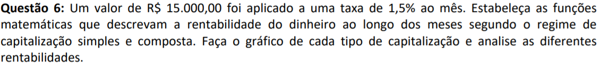
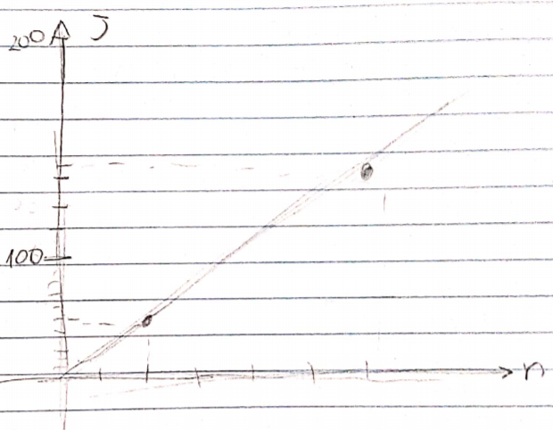
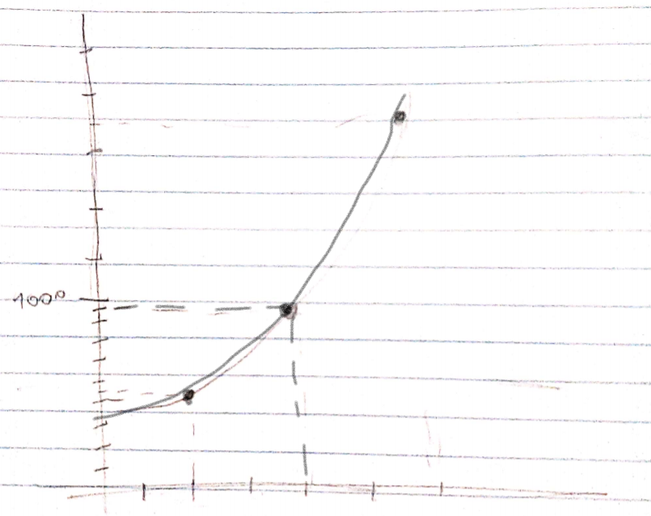

Matemática Financeira
Introdução ao tema
A matemática vai trabalhar como diz o nome com questões financeiras. Focando em estudar a evolução do valor do dinheiro com o passar do tempo, analisando os fenômenos econômico-financeiros através da matemática
Principais conceitos
- Capital Inicial, Principal ou Valor Presente: como já diz o nome se refere ao valor inicial de um empréstimo e aplicação. Normalmente representado pelas letras C, P ou PV.
- Prazo : é o tempo de duração do empréstimo ou aplicação. Pode ser simbolizado em dias, anos, semestres, etc. Representado pela letra n.
- Juro: pode ser o rendimento de uma aplicação ou também o preço extra a ser pago em um empréstimo por um período de tempo. Representados pela letra J
- Taxa de juros: é a taxa percentual de rendimento em uma aplicação ou pagamento em um empréstimo por um período de tempo. Representado pela letra i
- Montante ou Valor Futuro: é o valor final da aplicação ou empréstimo. Representado pelas letras M,S ou FV.
Para descobrir o montante basta somar o capital inicial e os juros. M = P+J.
Juros simples
Os juros simples são quando a taxa de juros é sempre sobre o capital inicial, durante todo o período da capitalização.
Existem 2 fórmulas referente aos juros simples:
- Cálculo dos juros
J = C * i * n
- cálculo do montante
M = C(1+in)
Juros compostos
Os juros compostos diferentemente do simples que incide sempre sobre o capital inicial, os juros compostos incidem sobre o capital inicial + os juros do período anterior, também conhecido como juros sobre juros.
- A fórmula utilizada é:
M = C(1+i)n
Exercício:
Essa foi a questão 6 do segundo trabalho sobre capitalização simples e composta e a sua relação com funções. Como não tiveram muitos exercícios sobre matemática financeira nos trabalhos, escolhi esse:

- Para começar é preciso entender o que a questão pede, nesse caso é necessário pensar um pouco em funções também. A pergunta fala do valor dos juros em função do tempo, ou seja, para começar podemos pensar em calcular os juros, no caso fazer uma equação/função que expresse esse cálculo.
- Primeiramente vamos focar na capitalização simples, nela como mencionado na explicação temos uma fórmula para calcular os juros: J= C*i*n. Coletando todos os dados que nos foram informados temos que: C= 15000 e i = 0,015 (esse número corresponde a porcentagem transformada em decimal). Com esses dados conseguimos formar a equação: J = 15000*0,015*n.
- Continuando com a capitalização simples, se utilizarmos a equação formada temos uma função, já que ela representa o valor dos juros em função do tempo: J(n) = 15000 * 0,015*n. Realizando as multiplicações fica: J(n) = 225n.
OBS: durante a resolução eu errei nessa parte, pois me confundi na quantidade de zeros do 15000 e acabei fazendo 1500 * 0,015 = 22,5n.
- Agora que já temos a função pronta é só encontrar os pares para desenhar o gráfico, para isso precisamos apenas escolher alguns números para o “n” (que seria o “x”) para assim encontrarmos o “J” (que seria o “y”). O gráfico ficaria assim:

- Agora vamos focar apenas na capitalização composta. Seguindo os mesmos passos iniciais pensamos em como fazer uma equação para o cálculo dos juros. Essa é mais complicada que a anterior, já que não tem uma fórmula específica para o cálculo dos juros. Portanto precisamos usar o raciocínio de que o montante menos o capital inicial resulta nos juros.
- Para isso sabemos que existe uma fórmula específica para o cálculo do montante: M = C(1+i)n. Substituindo pelos valores ficaria: M= 15000(1+0,015)n.
- Lembrando que J = M - C. Para formar a função é só trocarmos o montante pela sua equação e trocarmos o C pelo 15000 que foi o capital inicial informado. Ficaria: J = 15000(1+0,015)n - 15000. Resolvendo os parênteses conseguimos a função: J(n) = 15000 * 1,015n -15000.
- Agora é só fazer o mesmo procedimento da anterior, trocar o “n” por diferentes números, assim você vai encontrar um par de números (x;y). Vai descobrir os juros no tempo n. O gráfico fica assim:

- Agora a última parte que é analisar a rentabilidade nas diferentes capitalizações, eu não fiz essa parte no trabalho, pois acabei deixando para fazer depois e acho que esqueci. Podemos analisar através dos gráficos que na capitalização composta os juros são muito maiores, enquanto em 2 meses os juros na capitalização simples ficam 45, já na capitalização composta ficam 450. Além de que na capitalização composta os juros aumentam muito mais de um mês para o outro do que na capitalização simples.
Conclusão sobre o conteúdo
Agora é o momento de falar um pouco sobre as minhas experiências com esse conteúdo e mencionar um pouco do meu aprendizado. Pra começar, posso dizer que foi um dos mais fáceis para compreender. O que ajudou muito a entender melhor o conteúdo foi a possibilidade de relacionar com a vida real. As fórmulas deixam tudo mais simples, já que na maioria das questões conseguimos apenas substituir as letras pelos seus respectivos valores. Outro ponto muito interessante para mim foi como relacionamos esse conteúdo com as funções vistas anteriormente, nunca esquecendo o que já foi visto. Fiz as atividades propostas rápido e sem grandes dificuldades. Também é um contúdo que cai bastante em alguns vestibulare e Enem então acredito ter sido muito importante poder ver esse conteúdo novamente, já que estudei muito tempo atrás e não lembrava direito, por isso decidi incluí-lo aqui no portfólio.
<- Voltar para o conteúdo anterior
Ir para o próximo conteúdo ->